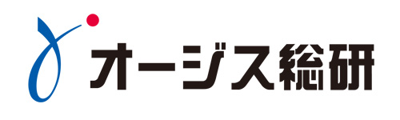

こんにちは世界！
東京・京都・北海道・松江と、日本各地で続々と開催されている、Rails Girlsがいよいよ名古屋にやってきます！二日間のワークショップの間に、Ruby on Railsのすてきな世界を体験してみませんか？ワークショップは無料です。
多数のお申し込み、ありがとうございました！
応募多数につき、選考を実施致します。
結果は2014年2月16日(日)にお送りしました。
お申し込みをされた方は確認をお願い致します。
Hello world!
Rails Girls comes to Nagoya! During the free two-day workshop we'll dive into the magical world of Ruby on Rails!
Applications was closed onn 7th of February. Thank you!
概要 コーチに教えてもらいながらプログラムを設計して、プロトタイプを作り、コーディングします。
必要なもの 自分のノートパソコン、やる気とキラリと光るイマジネーションを持ってきてください！
コーチ募集中！ Rails Girls Nagoya では現在コーチを募集しています。 こちらからお問い合わせ下さい。
| 19:30 - 21:00 |
インストール・ ディまずは、参加者同士、お互いに知り合いになりましょう。ご自分のノートパソコンをお持ちください。 それぞれのパソコンにRubyとRailsをインストールし、Rubyプログラミングの最初の一歩をコーチとともに始めてみましょう。 |
|---|
| 9:30 - 10:30 |
レジストレーション、コーヒー金曜日にRuby on Railsのインストールトラブルがあれば、朝のうちに解決しておきましょう。 金曜日にすべてうまく行ったひとは参加しなくてもOKです。10:00ごろからのんびりきてください。 |
|---|---|
| 10:30 - 10:45 |
開会一日の流れの説明。オーガナイザーから一言。 |
| 10:45 - 13:00 |
ワークショップ |
| 13:00 - 14:00 | ランチ |
| 14:00- 14:30 |
ライトニングトークス |
| 14:30 - 17:00 |
ワークショップ |
| 17:15 - 19:00 頃 |
アフター・パーティ参加者、コーチ、スタッフによるパーティです。ワークショップで聞き損ねたことや RubyやRailsのこと、ステップアップの方法など、コーチに気軽に質問してみましょう。 |
参加申し込みは締め切らせていただきました。
多数のお申し込み、ありがとうございました！
締め切り:2014年2月7日(金)
参加了承の連絡:2014年2月16日(日)
会場:
株式会社エイチーム 会議室 地図
名古屋市西区牛島町6番1号 名古屋ルーセントタワー 36F
Rails Girls Nagoya は以下のすばらしいパートナーとの共同開催です。
Rails Girlsは非営利イベントのパートナーあるいはスポンサーを探しています！ こちらまでご連絡ください！
株式会社エイチームは、インターネット・モバイル端末をベースとしたコンシューマー向けサービスを主軸に、 ゲーム・デジタルコンテンツの「エンターテインメント事業」と日常生活に密着した比較サイトや情報サイトの 「ライフスタイルサポート事業」の企画・開発・運営を行なうベンチャー企業です。
 Herokuは、Ruby、Java、Python、Scala、Node.js、Clojureなどの複数のプログラミング言語と
フレームワークに対応したクラウドアプリケーションの開発を支援するPaaS（Platform-as-a-Service）のリーダーです。
Herokuは、優れた開発者の生産性を最大限に引き出すプラットフォームであり、開発者はサーバーや実行環境の維持管理、
アプリケーションの展開、スケーラビリティへの考慮にとらわれず、アプリケーションの開発に１００%集中することができます。
Herokuは、Ruby、Java、Python、Scala、Node.js、Clojureなどの複数のプログラミング言語と
フレームワークに対応したクラウドアプリケーションの開発を支援するPaaS（Platform-as-a-Service）のリーダーです。
Herokuは、優れた開発者の生産性を最大限に引き出すプラットフォームであり、開発者はサーバーや実行環境の維持管理、
アプリケーションの展開、スケーラビリティへの考慮にとらわれず、アプリケーションの開発に１００%集中することができます。
スタンドファーム株式会社は2011年6月に設立された名古屋のスタートアップ企業です。 1通から郵送できるクラウド請求書管理サービス「Misoca」を開発・運営しており、フリーランスや中小事業者様を中心に好評を頂いています。 弊社は Ruby と Rails、そしてコミュニティの恩恵を多分に受けています。また、より多くのひとにプログラミングの楽しさを知ってもらえることを 願って、RailsGirlsNagoyaに協賛いたします。
 株式会社オージス総研は、大阪ガスグループの一員として、ITコンサルティングから、 設計、開発、維持運用管理まで多岐に渡るソリューションを提供しています。いつもお客様サイドに立ち、変化する時代やビジネスに対応することを目指し、 常に新しい試みをつづけています。
 株式会社インターネットイニシアティブ
私たちIIJは、MOGOKという少し変わった名前のRubyのPaaSを、国内のレスポンスのいい環境と安心の日本語サポートで提供しています。
MOGOKは「コンピュータに使われる人」ではなく 「コンピュータを使う人」でありたいと願うすべてのRubyプログラマを支援します。
株式会社インターネットイニシアティブ
私たちIIJは、MOGOKという少し変わった名前のRubyのPaaSを、国内のレスポンスのいい環境と安心の日本語サポートで提供しています。
MOGOKは「コンピュータに使われる人」ではなく 「コンピュータを使う人」でありたいと願うすべてのRubyプログラマを支援します。
 日本Rubyの会は、Rubyの利用者の支援とRuby(とRubyのライブラリ)開発者の支援を目的とした一般社団法人です。
現在は、ドキュメントの整備や、イベントへの参加協力等を中心に活動しています。
日本Rubyの会は、Rubyの利用者の支援とRuby(とRubyのライブラリ)開発者の支援を目的とした一般社団法人です。
現在は、ドキュメントの整備や、イベントへの参加協力等を中心に活動しています。
 株式会社spice lifeはECを通して世の中の笑顔を増やすサービスを作る会社。
spice lifeで開発するのはECの分野だけど、普通のECではなく、ちょっと変わった、ちょっと新しい、ちょっと世の中を良くするようなECです。
もちろんRuby（Rails）で開発しています。
株式会社spice lifeはECを通して世の中の笑顔を増やすサービスを作る会社。
spice lifeで開発するのはECの分野だけど、普通のECではなく、ちょっと変わった、ちょっと新しい、ちょっと世の中を良くするようなECです。
もちろんRuby（Rails）で開発しています。
参加費はどのくらいかかりますか？ 無料です。申し込むときにはわくわくした気持ちだけあればいいです。
どのような人が参加するのでしょうか？ コンピュータを使ったことがある女性ならだれでも参加できます。これまでに開催されたRails Girlsイベントには様々な年齢の女性がやってきました。ご自分のノートパソコンをお持ちください。
男性も参加できますか？ 参加できます。ただし、必ずウェブアプリを作りたがっている女性と一緒に参加してください。申し込み人数が多い場合はお断りすることがあります。
プログラミングの経験があります。手伝うことはできますか？ Rails Girls Nagoya ではコーチを担当してくれる人を捜しています。 コーチを担当したいという方はこちらからお問い合わせ下さい。
{kind=link}